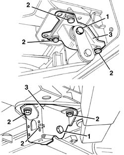
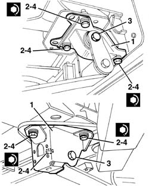
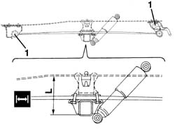
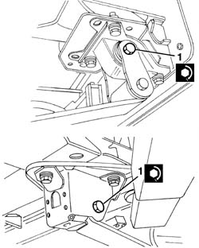

4420A70 REAR SUSPENSION LEAF SPRING BRACKET/SUPPORT - R.R.
- Path
- Procedures > 44 SUSPENSION AND WHEELS > 4420 REAR SUSPENSION > 4420A REAR DAMPERS AND SPRINGS > 4420A70 REAR SUSPENSION LEAF SPRING BRACKET/SUPPORT - R.R.
- Kind
- repair procedure (removal / refitting; the operation number is the code)
- Applies to
- all engines; all production periods
- Interactive page
- https://sloeber94.github.io/elrnDB-fDct/en/#/244001193
Applies to: all engines; all production periods
 Removing
Removing
 Refitting
Refitting- Position the vehicle on the lift.
- Working underneath the vehicle, using a jack, slightly raise the rear axle on the side of the support to be removed.
1. Undo the bolt fixing the leaf spring to the support and slightly lower the axle using the jack.
2. Undo the bolts fixing the support.
3. Keep the support.

Applies to: all engines; all production periods
Refitting
Removing- Check that the support is not damaged.
1. Place the support in position.
2. Screw in the bolts without tightening them.
3. Place the ends of the leaf spring in position and screw in the bolt without tightening it.
4. Tighten the support fixing bolts.
Value - daNm | Fastening | Component | Ø | |
|---|---|---|---|---|
4 | 13,7 - 18-7 | Bolt | - | M14x1.5 |

Applies to: all engines; all production periods
- Remove the vehicle from the lift.
1. The definitive tightening of the bolt fixing the leaf spring to the support should be carried out in design load conditions. Therefore a suitable load must be applied to the vehicle over the rear axle so that distance (L) between the buffer plane and the buffer support plane corresponds to the recommended figure (leaf spring in horizontal position).
Subject | Value | |
|---|---|---|
1 | Ducato 10 - 14 Distance "L" between buffer plane and buffer support plane | mm 192 |
Subject | Value | |
|---|---|---|
1 | Ducato Maxi Distance "L" between buffer plane and buffer support plane | mm 197 |
- The following loads must be applied to the vehicle in the area of the rear axle to obtain the recommended distance.
- Ducato 10 van and lorry: 850 kg
- Ducato 10 panorama: 650 kg
- Ducato 14 van: 1,100 kg
- Ducato 14 lorry: 1,200 kg
- Ducato Maxi van: 1,250 kg
- Ducato Maxi lorry: 1,400 kg

Applies to: all engines; all production periods
1. Tighten the bolt fixing the leaf spring to the support.
Value - daNm | Fastening | Component | Ø | |
|---|---|---|---|---|
1 | 14,2 - 20,6 | Bolt | - | M16x1.5 |

Applies to: all engines; all production periods
- Remove the ballast.